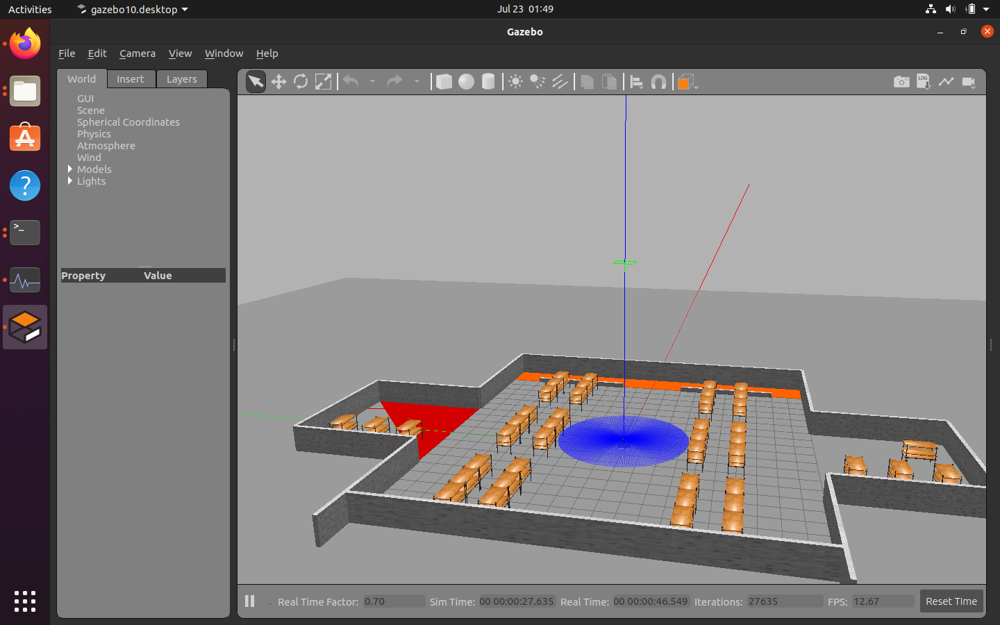
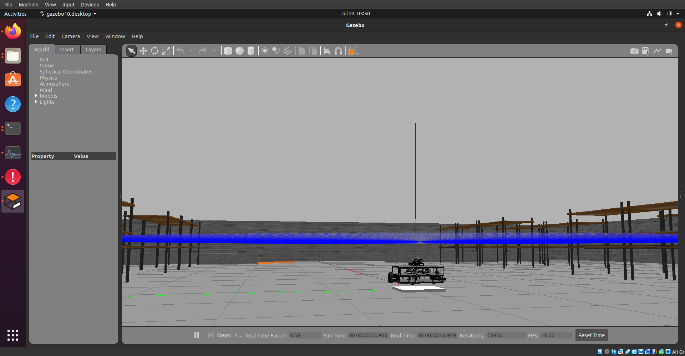
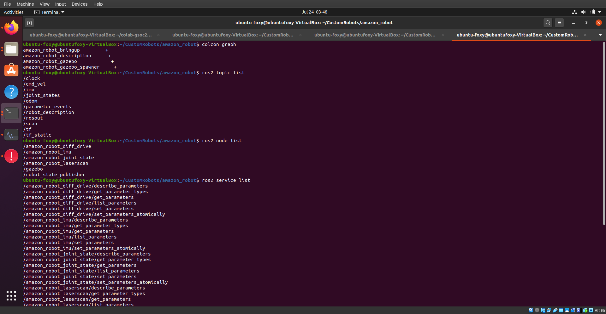

Level 2!
Issues Fixed:
PR #8 on Jderobot/CustomRobots
Issues Pending:
#7 WIP for ROS2 Amazon Robot model
Week 7 + 8 blog
We discussed in the last iteration of the blog about the origins of ROS. After more than a decade of operations, the open source community became well aware of what awesomeness ROS is, and also some of it’s weaknesses. For example. as ROS uses it’s own middleware, a ros master must always be running in the background to manage the messages, nodes, servers and actions. This makes it much difficult to interface multiple robots with each other, independently. (If you are interested, check out my masters thesis repo).
ROS2 tries to overcome these problems by completely redesigning the underlying architecture while keeping the same concepts. For Jderobot, as we wanted to venture into multi-robots anyway, we decided to port the Amazon Robot exercise to be the first ever exercise in ROS2. This blog is an overview of some of the stuff I was working on for last two weeks and also a short writetup about ROS1 to ROS2 leap.
We begin by first discussing aa bit about the most important change/ feature of ROS2: DDS.
DDS
Data Distribution Service (DDS) provides a publish-subscribe transport which is very similar to ROS’s publish-subscribe transport. It is very flexible and extensively used in critical applications such as flight systems and battleships. If you are interested in learning more about the DDS and ROS2, if definitely recommend reading this article.
However the developers have designed the ROS2 system in a such a way that hides much of the complexity of DDS while exposing some of its benefits. Hence we can safely overlook over minor details of the new middleware, for now!
Ament workspace and Colcon Build
The second important change is the new build tool. Again, best place is to start with an article about build tool. The new colcon build system is python native can also compile ROS1 and ROS2 packages. The launch files are now written in python3 and packages can be compiled individually.

Migration from ROS1
ROS2 has shiny new features such as multithreading and realtime support. But with every change, comes the dreadful migration from ROS1 to ROS2. There are 2 excellent articles depicting changes from ROS1 to ROS2 by Dirk Thomas and migration from ROS1 to ROS2 by ROS industrial and they are a must read before you even think about porting.
Once we have understood what we are dealing with, and after installing ROS2, it is best to follow the basic tutorials of ROS2.
Once that os done, it is the time to start porting. As mentioned here, I stated by porting a simple launch file. One of the best (and sadly the only complete one) resource for ROS2 examples are from turtlebot3. I considered the foxy-devel branch as a sort of standard for how my code must be structured. I ported my existing amazon_robot projects to include turtlebot3 model from ROS2
ROS2, gazebo and SDF 1.6
Now we have reached the part of porting which made me feel embarrassed, miserable and frustrated at the same time: The gazebo models. ROS2 also triggered a lot of changes in the way gazebo_ros connection is handled and made my newly created amazon robot .xacro model useless. I tried copying over all include files in one single urdf file, modifying it and then trying to make gazebo spawn my robot correctly, but it somehow didn’t work. So I resorted to converting my model from .xacro description to SDF 1.6 model.
I quickly realized that SDF format is also significantly changed and I spent a few more hours trying to fix the link issues. Finally my model turned out somewhat okay, but the lift platform didn’t work as expected. I could create the warehouse world with pallets and our robot in it, but the prismatic joint just didn’t seem to function. I am yet to solve this problem and it might be even worth to completely switch over to a new, proper warehouse robot base like tiago. But sadly, I could not find many well defined robot models for ROS2, except tb3 and dolly.
Navigation 2
This turned out to be surprisingly well documented. As our exercise will heavily depend on navigation concepts, I went through the awesome navigation2 paper and documentation and I would recommend the reader to do the same. I cannot explain this any better than those two resources.
We will focus more on the navigation part in upcoming weeks. For now, just launching a tb3 simulation was sufficient.
Porting the exercise
For ROS Noetic, I had to port the existing python2 code to python3. This turned out to be a nice segue into ROS2 as 1/4th porting work was already done. Still, I had to remove all the rospy code and morph it into rclpy one. With a minor hiccup of move_base, everything works now! As navigation2 integration is still ongoing, this will be updated soon!
Warehouse 
Amazon Robot In ROS2 
Topics and Services 
Creation of new CustomRobots repo
In the spirit of modernisation, Jderobot is also introducing new repo for all the Robots and related packages used in the academy in the form of CustomRobots repo. So from now on, my model will be updated there.
I am eager to also launch the first ever ROS2 academy exercise and hopefully it will be done soon! Until then!
Vi sees senere!